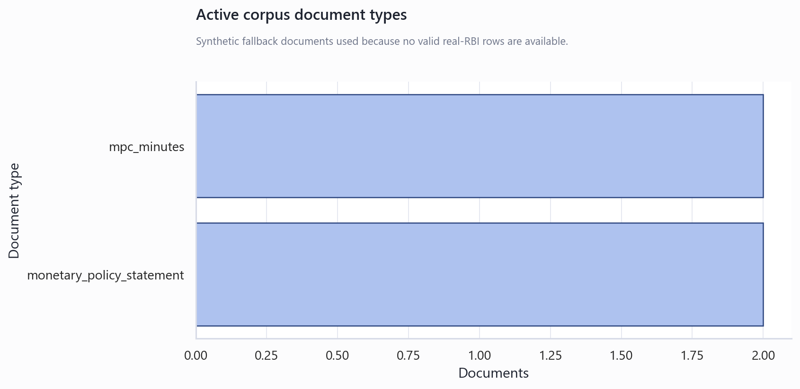
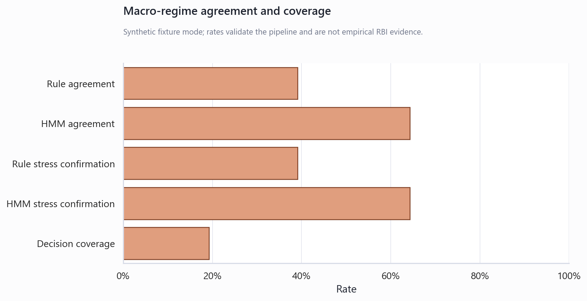

Phase 4A.3 Real RBI Corpus Validation
Technical Summary
RBI macro sentiment remains a confirmation layer until real-document coverage is sufficient and out-of-sample validation supports promotion.
No empirical conclusion is available without a real corpus
The active documents are synthetic fixtures. The composition chart is therefore a pipeline audit, not a description of RBI communication coverage.

Agreement and coverage rates confirm that alignment and comparison code runs end-to-end. They do not establish predictive or empirical validity.

Scope, Data, and Metric Definitions
The real manifest contains 0 valid documents covering Unavailable. The active corpus contains 4 documents and 16 scored sentences. Decision coverage is the share of market sessions with a non-insufficient lagged macro label.
| document_type | document_count |
|---|---|
| mpc_minutes | 2 |
| monetary_policy_statement | 2 |
Macro-risk label distribution
| macro_label | session_count |
|---|---|
| insufficient_macro_data | 941 |
| risk_off_macro | 126 |
| risk_on_macro | 98 |
Methodology and Look-Ahead Controls
Documents are validated locally, segmented into stable sentences, and scored for stance, certainty, and time orientation. Publication dates map to the first market session on or after publication. The rolling macro label is shifted by 1 session before comparison with rule-based and HMM walk-forward regimes.
net_stance_score = hawkish_share - dovish_share macro_risk_score = net_stance_score + uncertainty_share decision_macro_label[t] = macro_label[t - 1]
Required validation questions
| question | answer |
|---|---|
| 1. How many real RBI documents were ingested? | 0 |
| 2. What date range does the corpus cover? | Unavailable |
| 3. Which document types are included? | None |
| 4. What scoring method was used? | lexicon |
| 5. What is the sentence/document coverage? | 16 sentences / 4 active documents; 19.2% decision-session coverage |
| 6. How was look-ahead avoided? | Publication dates were aligned to the first eligible market session and macro labels were shifted by 1 session. |
| 7. What is the macro-risk label distribution? | insufficient_macro_data: 941 sessions, risk_off_macro: 126 sessions, risk_on_macro: 98 sessions |
| 8. What is the agreement with HMM walk-forward regimes? | 64.3% |
| 9. What is the agreement with rule-based regimes? | 39.1% |
| 10. Does RBI macro risk-off confirm stress/crisis periods? | Rule-based: 39.1%; HMM walk-forward: 64.3% |
| 11. Are there pre-stress macro warnings? | 0 identified date(s); synthetic fallback results are pipeline diagnostics only. |
| 12. Is coverage sufficient for empirical conclusions? | False |
| 13. Should sentiment remain commentary-only? | Yes. RBI macro sentiment remains a confirmation layer until real-document coverage is sufficient and out-of-sample validation supports promotion. |
Limitations, Uncertainty, and Robustness Checks
No real RBI text is bundled, the active corpus is sparse and synthetic, transformer models are optional and unvalidated, and the report market history is deterministic synthetic data. Full-sample HMM is not used. Allocation, strategy scoring, evidence gates, confidence, and portfolio weights remain unchanged.
Populate the governed real corpus before empirical interpretation
- Download public RBI documents using the manual guide.
- Validate source URLs, publication dates, duplicates, and extracted text.
- Run the empirical validation runner with real market returns and walk-forward regimes.
- Require adequate coverage and out-of-sample stability before considering allocation research.
Further Questions
What minimum document count, time span, and decision-date coverage should govern empirical eligibility? Does performance remain stable across document types, scoring methods, lookback windows, and genuinely out-of-sample periods?